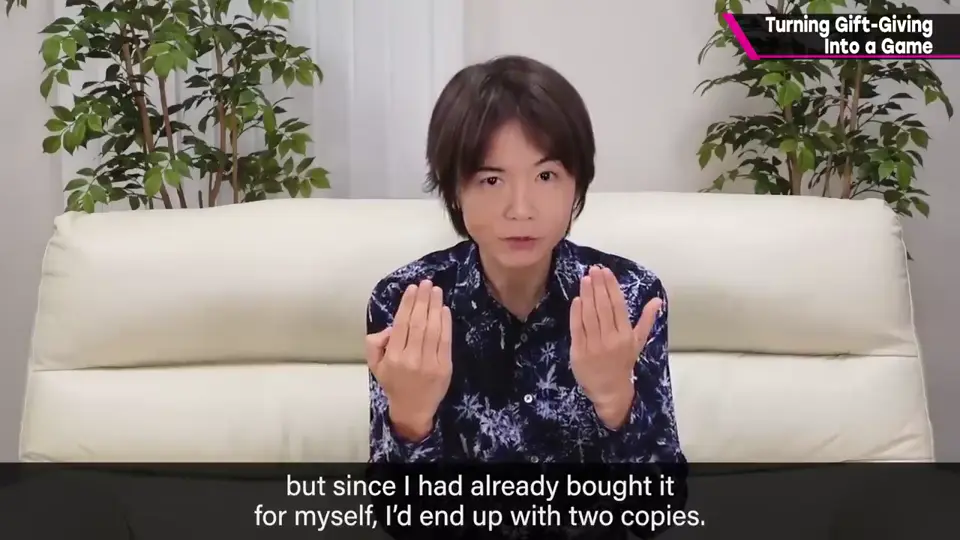
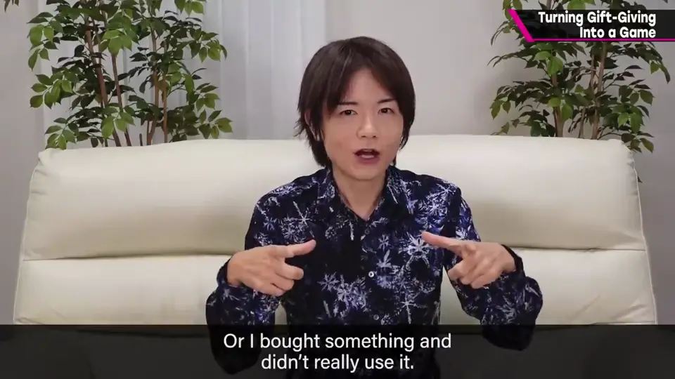
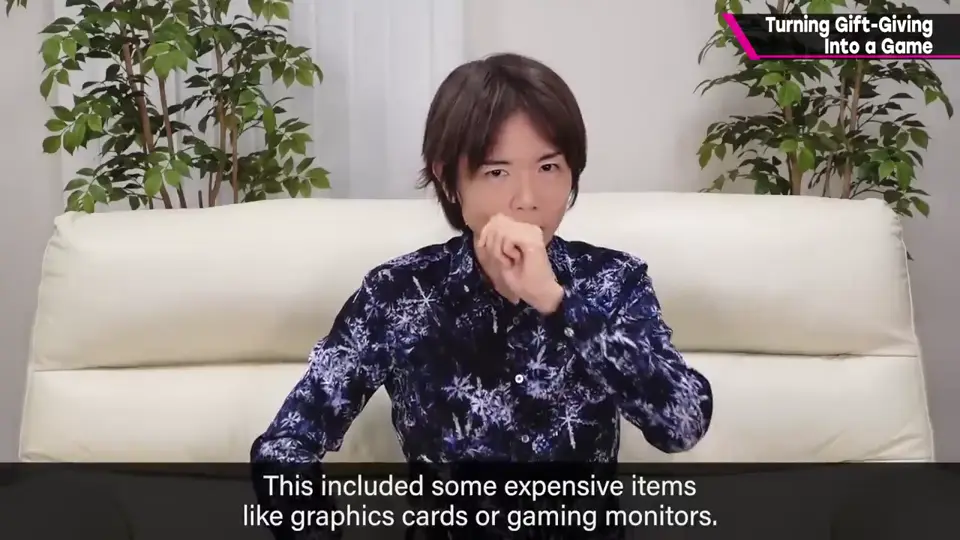
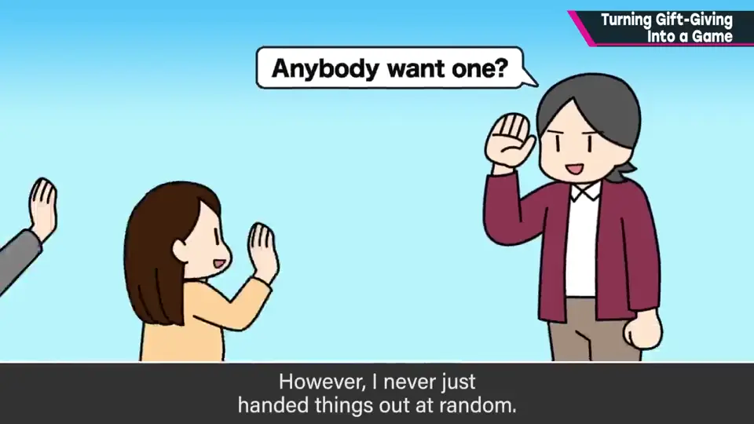
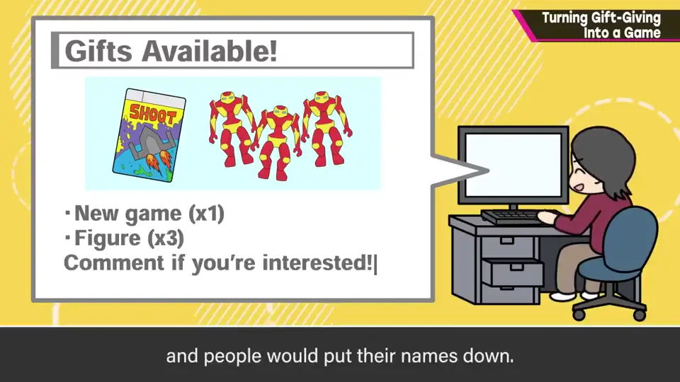
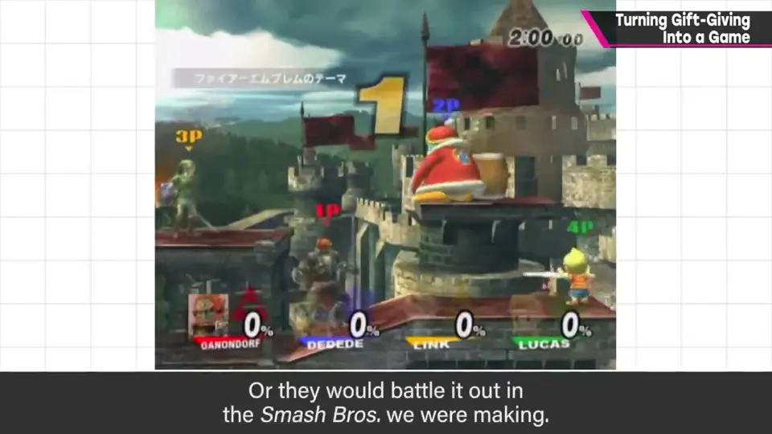
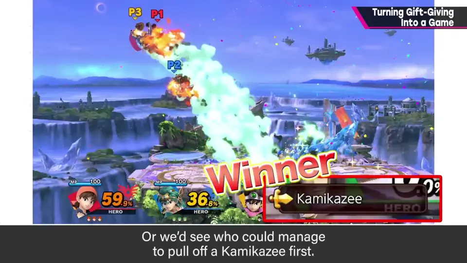
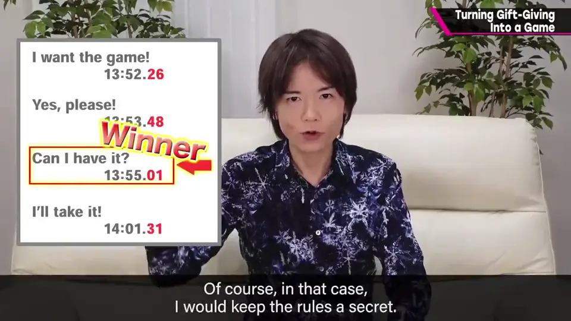
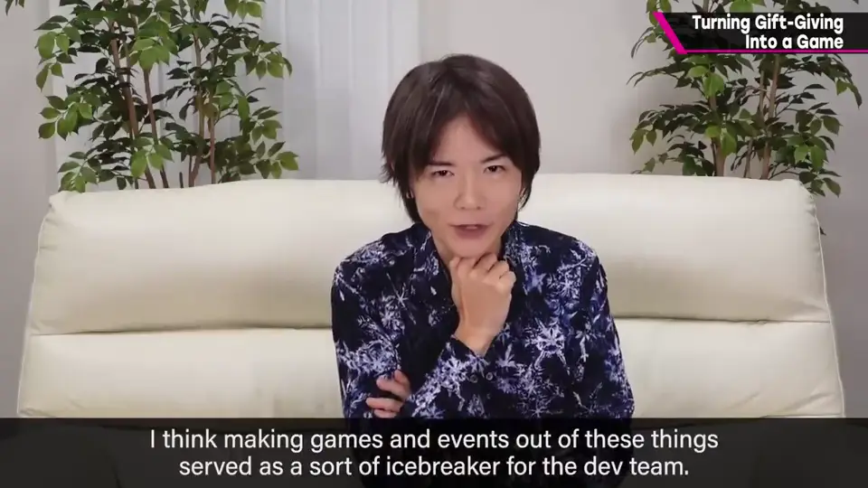
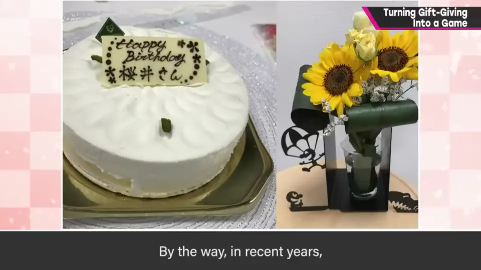

速览
特别是疫情前团队还在办公室时，樱井常办给员工的礼物活动：厂商送了游戏、他自己也买了，于是包装重复；或者不小心买了两份以上；或者买了却不太用的东西——其中还有显卡、电竞显示器等高价物，也有《大乱斗》相关活动的周边。他常把这些送给员工，那样更能有效利用。但他不是简单地送给第二个人，而是把对希望者的抽选本身当成余兴：先征集想要的人——在日报页面列出能送的东西，让大家举手；然后按某种规则从希望者中抽选：有时就是简单的猜拳淘汰赛，有时用开发中的《大乱斗》决胜负，或者比谁先在某 RPG 里放出「自爆咒」，或者回复时间最接近整 0 秒的人优先——当然这时一开始会把规则保密。抽选也游戏化、变成一场活动，他觉得也成了员工之间的润滑剂：既然要送，就要让大家开心，开心的人才是赢家。顺便一提，近年每到他生日，都会收到员工的祝福，非常感谢——这也证明导演与员工关系很好。这样的氛围很好吧。
1. 礼物从哪来 0:05
特别是疫情前团队还在办公室时，樱井常办给员工的礼物活动：
- 厂商送了游戏、自己也买了，包装重复。


- 不小心买了两份以上；或买了却不太用的东西。
- 也有显卡、电竞显示器等高价物，以及《大乱斗》活动的周边。

送给员工更能有效利用。
2. 不是随便送 0:36
但他不是简单地送人，而是把对希望者的抽选本身当成余兴。


先征集想要的人：在日报页面列出能送的东西，让大家举手。
3. 游戏化的抽选规则 1:00
- 简单的猜拳淘汰赛。
- 用开发中的《大乱斗》对战决胜负。


- 比谁先放出「自爆咒」。
- 回复时间最接近整 0 秒的人优先。

4. 让大家开心 1:36
抽选也游戏化、变成一场活动，他觉得也成了员工之间的润滑剂。

5. 生日的祝福 1:50
近年每到他生日，都会收到员工的祝福，非常感谢——这也证明导演与员工关系很好。这样的氛围很好吧。

自测题
1. 樱井给员工的礼物来自哪里？
重复的游戏、买错/不常用的东西、显卡显示器等高价物、活动周边。 0:20
2. 举出两种他用过的抽选规则。
用开发中的《大乱斗》对战；回复时间最接近 0 秒者优先（还有猜拳、先放自爆咒等）。 1:20
3. 把抽选游戏化有什么效果？
让送礼变成活动，促进员工交流，让大家都开心。 1:40